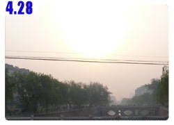
晚上房門被碰～碰～碰！的敲，依稀聽到『小兄弟，你睡了沒呀？給開個門呀～』，碰碰碰～！
敲了幾次之後，門就給打開了，我起身一看，以為真的是要來搶劫了。原來是鬍子大叔(就是房東)
結果只是因為有人住店，棉被不夠用。所以從我這一間房搬幾組過去應急一下。
看看手錶，都晚上十一點四十了，這個時候還有人要住店，也太淒慘了吧？
希望我旅行不要有這麼淒慘，深夜才找到過夜處的一天，倒回床上沒幾秒鐘又睡著了。
一般住旅館，大概都是中午十二點或是十一點左右要退房對吧？
一大清早六點，我正把背包都掛回小多身上，正在戴頭巾的時候，鬍子大叔又進來了，
『兄弟，你要走了嗎？』
對呀，差不多再五分鐘就要出發了，怎麼了嗎？
『沒事，只是有人要住店，只剩我這一間空房。』
探頭往外一看，還真的有一男一女在那邊等，怎麼回事呀，不是半夜住店，就是一大清早住店。
還好我現在都很早起，不然睡到一半被趕走那感覺肯定很差～
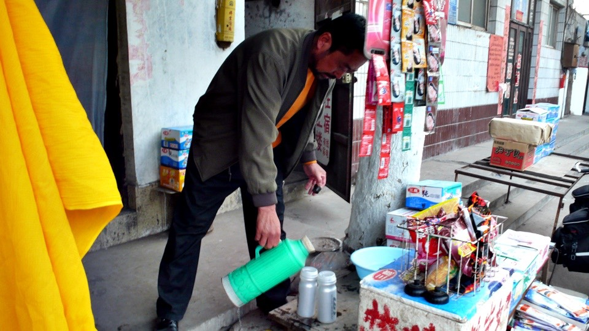
把車牽到鬍子大叔的雜貨店那裏，先跟他借個熱水壺，把今天要喝的水瓶給裝滿，
然後順便在這邊買了兩包牛奶當早餐喝，一包一塊錢，雖然用塑膠袋包起來感覺很奇怪，
但咬掉一個小角落就可以喝還挺方便的，而且味道還算不錯。
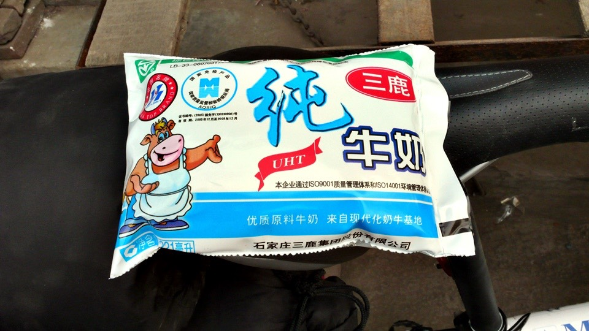
清早出發離開邯鄲，現代結合古代的城市，這也是我在河北省的最後一個都市。
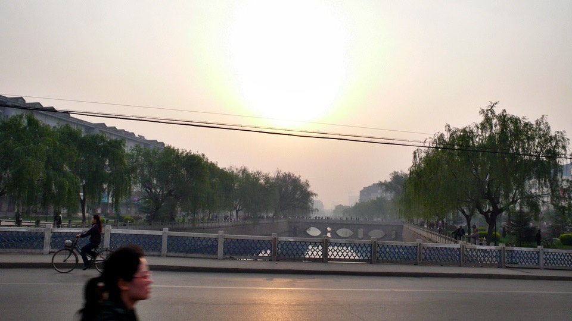
其實光是看車子的車牌就可以大概知道目前的區域，
我在北京的時候，車牌就通通寫一『京』，離開市區之後，就變成『冀』也就是河北的簡稱，
繼續往南騎了大約五十公里之後，就是河南和河北的界線，沒什麼特殊的標誌，就一個牌樓表示河南到了，
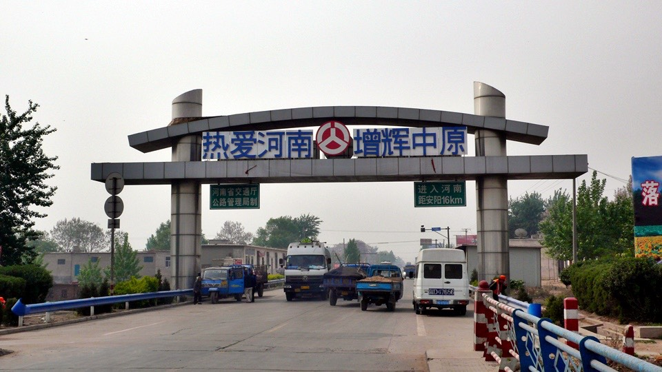
隨著進入河南，車牌也大多變成『豫』，除了車牌的差異之外，講話的口音更是明顯，
我那三腳貓的假北京腔已經不太能派上用場了，因為這邊的人講話可沒有北京腔，而是河南腔。
而且我也不能再說我是北京來的了，因為本來北京離我很近，說是北京來的還不會太引人注目，
現在只要一說是從北京來的，就會被廣播出去，『ㄟ～！快來呀！這小夥子從北京騎自行車到這呢！』
然後就是一連串的，騎多遠呀、騎幾天呀、我是幹啥的呀、要去哪呀、哪裡人呀，這樣連發炮的問題。
所以現在遇到類似的問題，回答的方式就是搭火車逃票的時候的方式，
查票員問你從哪一站搭車的，一律回答是從上一站就對了。
『我從邯鄲來的。』
結果這樣回答也不行，因為邯鄲在河北，我現在在河南，所以還是給人家一種很遠的感覺，
但起碼訝異的眼光就少了很多了。
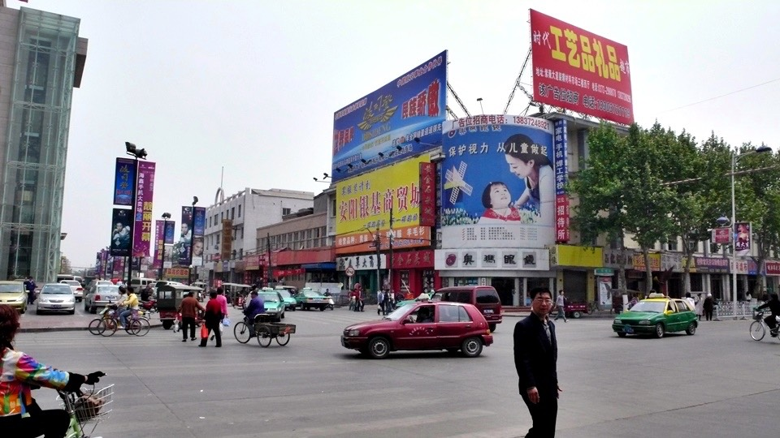
中午的時候到安陽吃午餐，點了一份炸醬麵還有炒豆芽，
如果這個是炸醬麵的話，那我吃了一輩子的炸醬麵是什麼呀~_~
這邊不是麵配上黑黑的炸醬，而是配上像是燴麵的醬汁，
有炒蛋、豆皮、甜不辣跟很多青菜，全部都淋上麵裡頭，真的是給它超級好吃，
午餐不想太寂寞，所以又點了一盤炒豆芽，結果就真的只是炒豆芽(用辣椒還有不知道什麼酸酸的東西炒)
雖然很好吃，但是點炒豆芽，端出來真的就是炒豆芽，心裡不知道為什麼有點空虛？
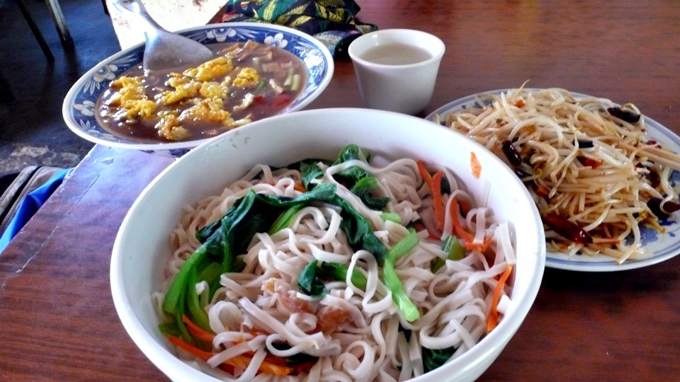
是因為這麼華麗的炸醬麵，一碗只要三塊五，而一盤炒豆芽要價四塊，所以我對它的期待高了點的關係嗎？@@"
老闆娘問我要不要喝啤酒？我說有沒有可樂？
有，但是沒有冰的，那就先幫我冰一瓶起來，我吃飽之後想在這邊休息一下，等可樂冰涼了我再喝。
吃完飯打瞌睡到十二點半，繼續往南騎。
今天一整天都是吹逆風，所以騎車的速度很慢很慢，碼表顯示都是在10~13公里之間徘徊。
騎的速度很慢很慢，我索性就跟著一個騎自行車賣很多小東西的小販後面走。
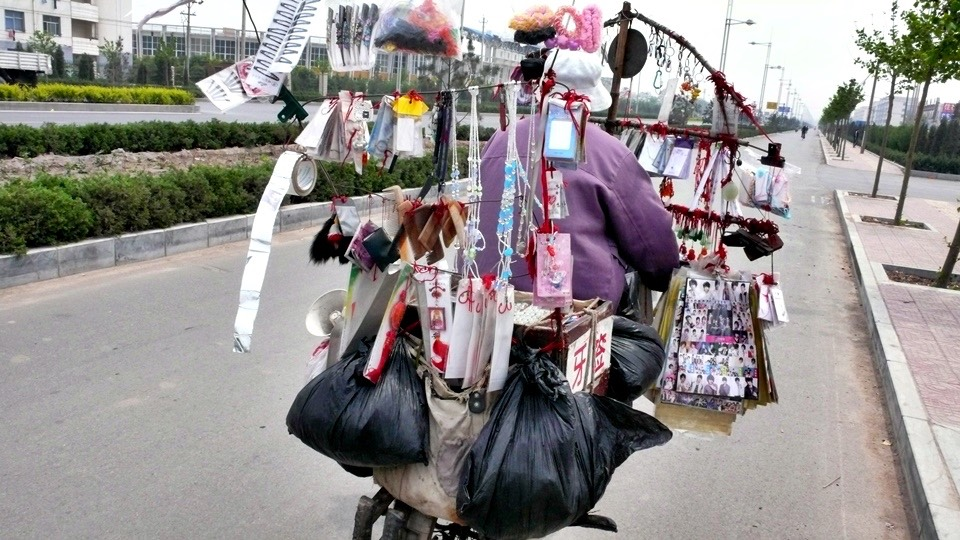
慢慢的騎了一整天的車，什麼有趣或是奇怪的事情都沒有發生，所以我的腦袋又進入了胡思亂想的模式。
一百年前，1907年，汽車從北京到巴黎探險的這個活動，它真的成功了宣告了汽車時代的來臨。
一百年後的今天，就是我們目前所處的年代，試問問我自己，一百年後，等我們大家全都已經不在了，
我們能留給後代子孫的，會是什麼樣的願景？
讓他們從2107年回顧一百年前，也就是現在的我們的時候，會給我們下什麼樣的評語？
人類有歷史以來，已經有好幾千年的時間，這段時間，發生了很多很多的事情，
人類創造了許多美妙的音樂、繪畫和美食，當然也做了很多的蠢事，發動戰爭、互相侵略。
但回顧這幾千年的歷史，有哪一個年代，是真的會讓我們覺得『憎恨』的呢？
即使是二戰的時代，至今仍有許多故事為人所津津樂道。
更不用提大航海時代的探險、三國和戰國時代的群雄爭霸，都是令人心醉神迷的時代，
唯獨一個時代例外，那就是『現在』。
『現在』是一個很諷刺的年代，是人類有史以來最提倡環保，同時也最破壞環境的時代。
一百年後，我們留給後代子孫的會是什麼？
是一個北極熊只能當成標本參觀的年代？
是一個北極冰山的存在只能透過記錄片回顧的年代？
是一個氣候異常、生物滅絕，充滿哀傷的年代？
科幻電影，只要是提到關於未來的，絕大多數都會讓車子在天空飛來飛去。
『為什麼車子要在天空飛呢？』
想必是因為路上放不下，所以只好讓車子可以飛起來，這樣才能容納更多的車子。
我們真的需要那麼多的車子嗎？
車子說穿了不過就是運輸工具，要是大眾運輸做的好的話，誰還願意自己花時間學開車、
買大筆積蓄買車、花錢加越來越貴的油、浪費時間找停車位、繳一張又一張的罰單、幫車子做永無止盡的保養？
一百年後的人們看現在的我們，會不會給予的就是一個『憎恨』的評價，
因為在我們這個年代，是人類有史以來，最讓地球瀕臨毀滅的時候，
現在不做些什麼來改變這一切，將來要花的努力絕對不只一百倍甚至一千倍。
等北極熊全部都淹死了，要花多少的工夫才能再製造出一隻來？
如果有人問我騎完車後想去哪裡？
我大概會說想去北極跟北極熊說對不起，是我的不做為讓你們全部死光光。
不是因為我做了些什麼而害死你們，而是因為我有機會做些什麼，但我覺得這是事不關己的事情，
能做些什麼，但卻不去做，而害了你們。
冷眼旁觀，不也是同罪？
『什麼罪？』
當一百年後的人們評論我們這個時代的時候，
如果他們說，因為這些人的關係，所以地球變成現在這個模樣。
這些人是該被憎恨的、該被譴責的甚至該被詛咒的，
而『這些人』，我想大家通通都有份。
我想起我在當兵的時候，那時候還在新訓，整個人很菜。
看到幾個班長在中山室分解一百多隻槍，要送去別的單位，
幾個班長一邊聊天，一邊拆槍，後來連長進來，就說
『你們這些白癡，要拆到什麼時候？不會叫那些阿兵哥，一人一把槍，三分鐘就全部拆完了嗎？』
那些班長是有在做事的人，為什麼還會被罵呢？
是因為做事的方法不對、態度不對還是想法不對？
也許有人會說，『薛德瑞你這個白癡，你以為靠你一個人騎腳踏車，就可以阻止地球暖化嗎？
我把我家的冰箱打開不要關，都還比你弄的涼快些！』
也許通用汽車或是福特汽車的總裁會說
『嘿，這個台灣人在幹嘛？以為自己一個人說些屁話，就可以動搖汽車工業嗎？』
當然，靠我一個人肯定是不夠的，我也沒想過可以拯救地球。
但是如果可以藉由這樣的行動，讓更多的人願意一起騎單車，
讓台灣能有更好的騎單車環境，讓世界知道台灣並不只是『Greed island』，更是『Green island』。
讓未來的人，也有機會看到活生生的北極熊，
讓以後的小孩，也可以夢想自己長大成為北極探險家，而不是北極考古學家。
胡思亂想著，時間過的特別快，一眨眼就下午四點了，剛好到一個城市，
看了看指示牌，是一個叫做『鶴壁』的地方，地圖上找不到。
膝蓋的部分有點痠痛，雖然騎車胡思亂想時間過得很快，但是該騎的部分，可不會因為這樣就變得比較輕鬆。
看到一個很大很大的牌子寫著『住宿部』，牽著車子過去問，住店多少錢？
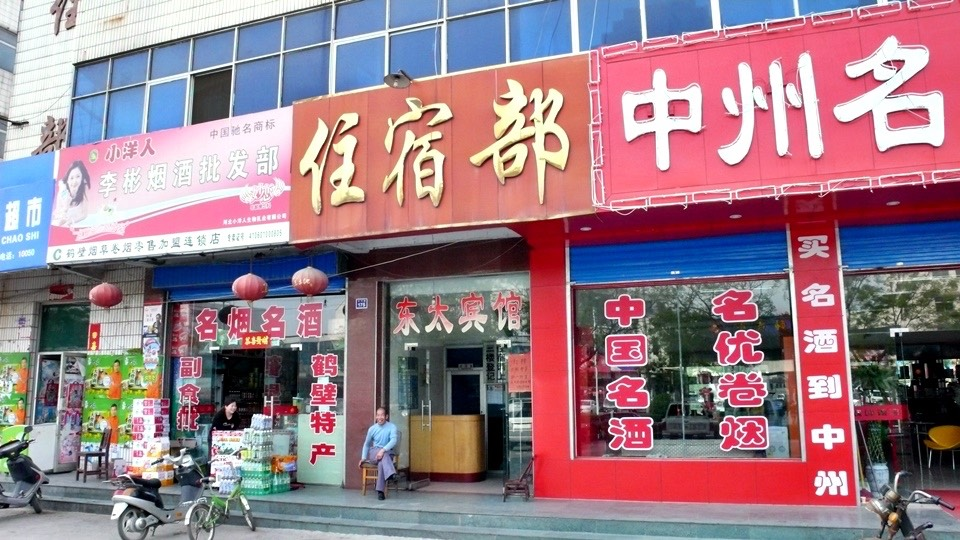
結果回答的口音已經不再是熟悉的北京腔了，濃濃的河南腔，又等著我去學習，然後唬爛別人我是從河南來的。
大娘先問我是哪裡來的？我說今天從邯鄲開始騎。
她說那有多遠呀？
看了看碼表，剛好110公里，老實的跟大娘講，結果她整個很開心，問我累不累？
要不要早點休息呀？然後帶我上去看房間。
這已經是歐洲級旅館的程度了，潔淨的單人床，寬大的房間，有第四台的彩色電視，
連沙發和小桌子甚至冷暖氣都有，更別提角落那個夜壺了。
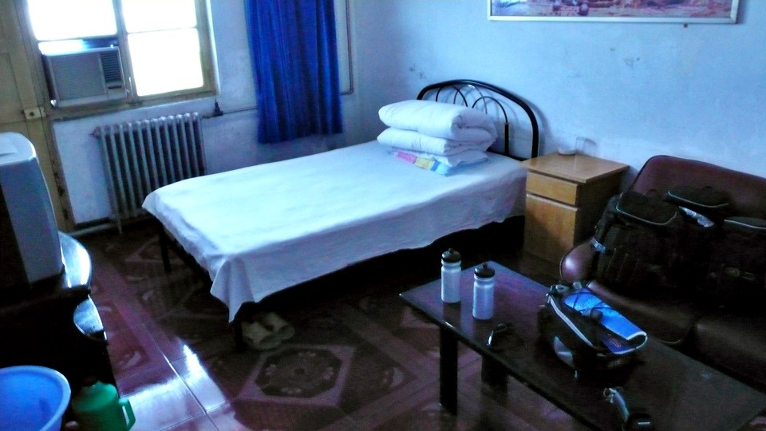
旅行到現在，就屬這一間最高級，有點擔心會不會太貴，
大娘說看我是個好傢伙，從邯鄲騎到這裡，算我20塊行了。
折合台幣也不到一百塊的房間，而且還有一個免費的大澡堂，我趕緊把東西都卸下來，
然後拎著全部的髒衣服，和我的毛巾、肥皂，往浴室狂奔而去！
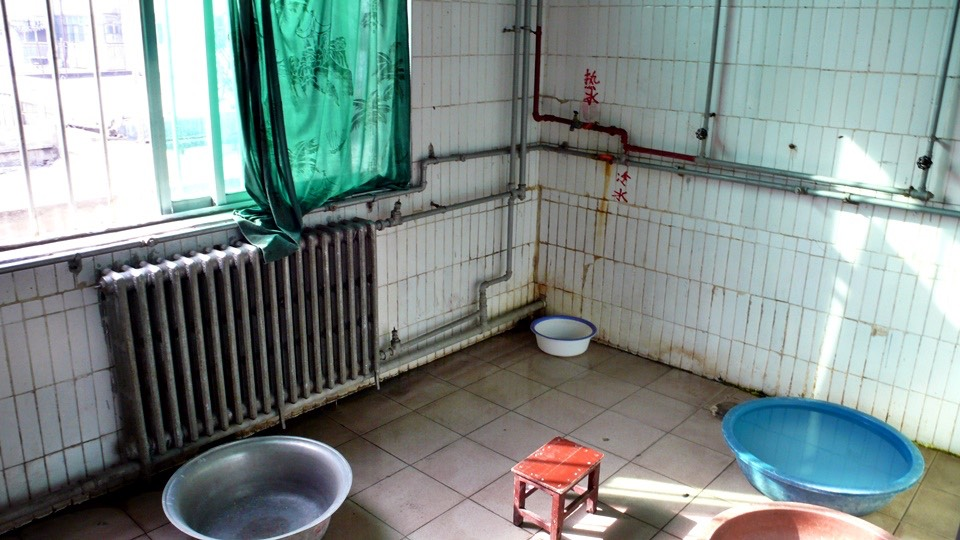
哇塞！真的是浴室呀！
哇塞！真的打開水龍頭就有源源不絕的熱水呀！
哇塞！真的是浴室呀！
(我知道這一句講過了，但是真的太興奮）
旅行到今天正好一個星期，第一次可以洗個正式又舒服的熱水澡，
把越穿越髒，但是洗不乾淨的風衣也用力的搓揉了幾下，這件衣服會是我髒兮兮程度的指標。
希望到了巴黎還看得出這件衣服原來的顏色是藍灰相間。
晚上在住宿部旁邊的小館子吃飯，是間頗有規模的館子，連服務人員都要穿制服，
看了一下菜單有點皺眉頭，十幾二十塊，甚至三十塊的菜都有。
物價不是絕對性的，而是相對性的，雖然這間餐廳最貴的菜，比起台灣路邊的快炒也差不多價錢，
但是這幾天都生活在極低的物價水準中，突然看到一樣菜就將近一天的生活費，還是覺得貴得咋舌。
點了一碗燴麵，結果送來的是湯麵，裡頭除了一般的麵條之外，還有冬粉絲和豆腐皮，湯底是很香的豬骨白湯。
大碗的吃很飽，四塊錢就結束掉了晚餐。
晚上可以悠閒的看電視、看書還有睡個安穩的好覺。
剛剛大娘又跟我要身分證登記，唬爛一下說忘記帶出門，我用手寫資料行嗎？也是矇過去了～
要是台胞證拿出來，不知道這間舒服的房間，會變成多少錢一晚上？
繼續閱讀：4.29 黃河之水天上來～
中國-人民幣－ 1：4.3 台幣
4.28
總計：36元
早餐牛奶兩包2元、午餐麻醬麵3.5元、炒豆芽4元、非常可樂2.5元、住店20元、晚餐燴麵4元